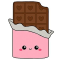
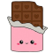

link de github : https://github.com/MartiPeker/Javascript-Coderhouse/tree/master
Movimientos hasta ahora con: "a" y "d" | Se agregaron condicionales para definir los limites de los movimientos del jugador, para que no salga fuera del rango del canvas | La posicion del jugador se guarda cada 5 movimientos en el localStorage, si el jugador actualiza la pagina va a retomar la posicion del jugador en el ultimo valor guardado en X (los valores "Y" no los agregue porque todavia tengo que definir el salto del player) | lo proximo a optimizar va a ser el fondo del canvas (dibujar sobre una imagen) y empezar a darle una interaccion a los enemigos\comida
 
